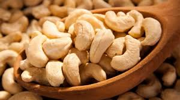
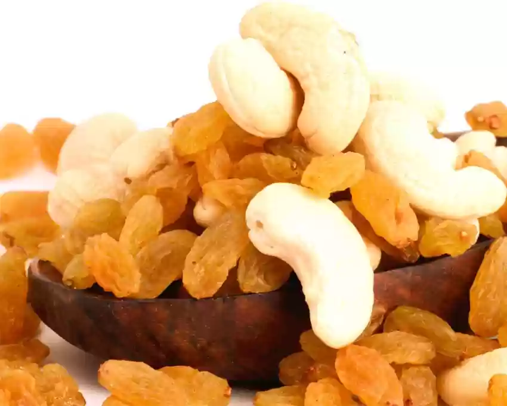
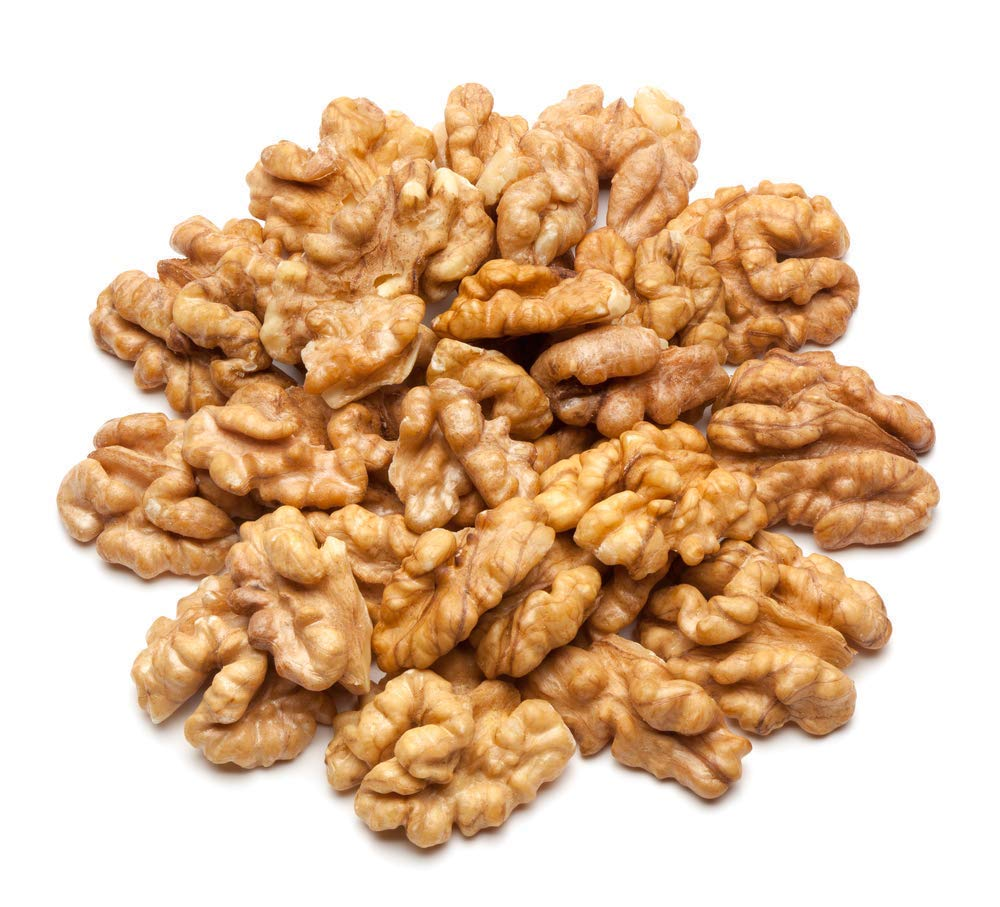

Peanuts take the lead in protein content and antioxidant properties, while almonds boast higher levels of vitamin E. At the end, the choice between these two nutritious nuts boils down to personal preference, dietary needs, and any potential
allergies.
2

Dry Fruits
Cashew
Cashew nuts are low in sugar and may help regulate blood sugar levels. · Cashew nuts are a good source of energy and can be a healthy snack ...
3

Dry Fruits
Kishmish
KIshmish or raisins are shriveled grapes that are produced in a number of regions around the world. They are naturally sweet and can be eaten raw or used in cooking, brewing, and baking. Depending on the variety of grapes, their colors,
and sizes, raisins can appear green, yellow, brown, and even purple.
4
Fruits
All Fruits
Fruits are a good source of vitamins and minerals, recognized for their role in preventing vitamin C and vitamin A deficiencies. People who incorporate fruits and vegetables as part of a healthy eating pattern have a reduced risk of some
chronic diseases.
5

Dry Fruits
Walnut
Walnuts have been touted because they resemble one with their furrowed appearance. The funny thing is that research has proved that consuming walnuts regularly does improve brain function. They are better than most other nuts, even almonds
because they have a high amount of polyunsaturated fat, vitamins, and minerals like potassium, iron, zinc, and magnesium. Fibre-rich and antioxidant-rich, walnuts trump all the other dry fruits on all accounts